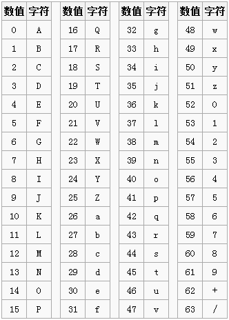
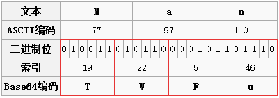

最近在做将文件转成base64编码，并保存在文件中。编码后的文件比编码前的文件大1/3。于是研究了一下base64编码的原理。
我们在通过网络传输文件时，并不是所有的字节都可以传输的。如我们在发送邮件时，只支持可见字符的传送，像ASCII码的控制字符不能通过邮件发送；图片的二进制流并不是每个字节都是可见字符。
这时候我们需要把不可见字符转换为可见字符。于是就有了base64编码，Base64就是一种基于64个可打印字符来表示二进制数据的表示方法。
看一下Base64的索引表，字符选用了"A-Z、a-z、0-9、+、/" 64个可打印字符。数值代表字符的索引，这个是标准Base64协议规定的，不能更改。64个字符用6个bit位就可以全部表示，一个字节有8个bit位，剩下两个bit就浪费掉了，这样就不得不牺牲一部分空间了。这里需要弄明白的就是一个Base64字符是8个bit，但是有效部分只有右边的6个bit，左边两个永远是0。

如何将字符转换为base64编码，首先我们来看个例子，更容易理解

首先我们将字符转换为二进制，将二进制数据分割，每6位分割成base64的有效为，然后在前补0，将补0 后的8位二进制转为十进制数据，十进制数据就是base64编码的索引，根据索引查找对应的编码即可。
8和6的最小公倍数是24，也就是说3个传统字节可以由4个Base64字符来表示，保证有效位数是一样的，这样就多了1/3的字节数来弥补Base64只有6个有效bit的不足。因此文件的大小也增加1/3。
原则是Base64字符的最小单位是四个字符一组，那这才两个字符，后边补两个"="吧。其实不用"="也不耽误解码，之所以用"="，可能是考虑到多段编码后的Base64字符串拼起来也不会引起混淆。由此可见Base64字符串只可能最后出现一个或两个"="，中间是不可能出现"="的。
本文参考文档：https://www.cnblogs.com/luguo3000/p/3940197.html